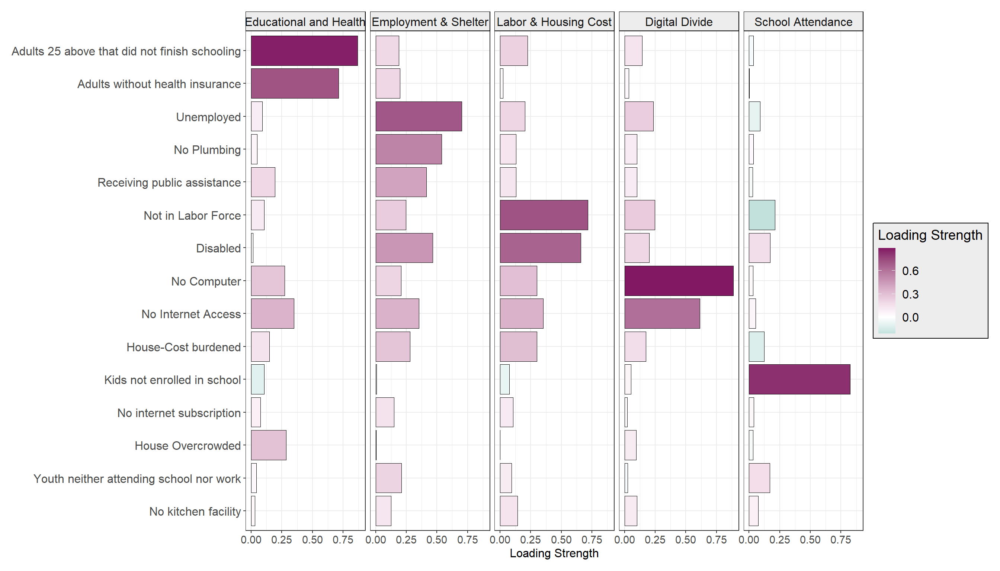
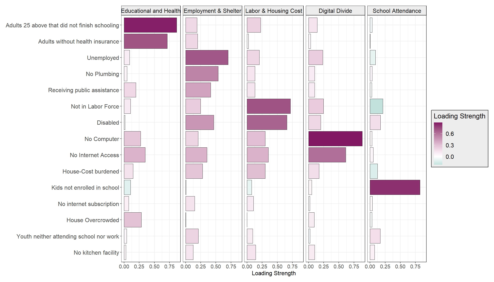
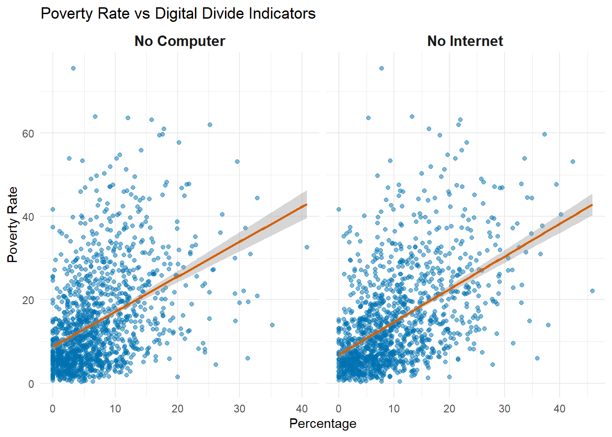

Warning: The `size` argument of `element_rect()` is deprecated as of ggplot2 3.4.0.
ℹ Please use the `linewidth` argument instead.
Within the vibrant urban tapestry of Chicago, characterized by its architectural prowess and economic vitality, lies a less visible but critically important dimension of urban life: multidimensional poverty. This phenomenon extends beyond the traditional income-based assessments, to encompass a range of deprivations that affect households.
This commentary draws upon the latest empirical data from the ACS 5-Year Estimates for 2022, employing a methodical approach (more details here) to identify and quantify 15 distinct indicators of deprivation. These indicators span critical domains such as health, education, employment, housing, and digital accessibility, thereby offering a comprehensive view of the multifaceted nature of poverty.
The rationale for adopting a multidimensional perspective on poverty is grounded in contemporary scholarly discourse, which advocates for a more nuanced understanding of poverty that reflects the complex realities of urban deprivation. This approach acknowledges that poverty is not merely a lack of financial resources but encompasses a broader spectrum of unmet needs and rights, including but not limited to, adequate healthcare, quality education, stable employment, secure housing, and equitable access to information technology.
Figure 1: Multidimensional Poverty Indicators in Chicago: A Factor Analysis
Warning: The `size` argument of `element_rect()` is deprecated as of ggplot2 3.4.0.
ℹ Please use the `linewidth` argument instead.
Figure 1 presents a factor analysis of various deprivation indicators within Chicago, offering a statistical representation of the underlying structures of multidimensional poverty. Factor analysis, a complex statistical method, is employed here to identify latent variables that influence the observed data. These latent variables (or factors), represent broad domains of deprivation that are inferred from the correlations among the individual indicators. By analyzing these relationships, the figure visually conveys which aspects of urban life are most strongly associated with the different facets of poverty.
Each bar in the graph corresponds to a specific indicator of deprivation, such as lack of health insurance or inadequate housing, and extends horizontally to signify its factor loading strength. Factor loadings are the key metrics in this analysis, reflecting the degree to which each indicator correlates with a particular factor — a higher loading indicates a stronger association. The graph is divided into distinct sections, each representing a broad dimension of deprivation, such as “Educational and Health,” “Employment & Home Condition,” “Labor & Housing Cost,” “Digital Divide,” and “School Attendance.” These broad dimensions, labeled as MRs (Multiple Regression scores), serve to categorize the indicators, revealing clusters of challenges that tend to co-occur in the urban landscape.
Here lies a placeholder for the interactive shiny dashboard
Figure 2: Spatial Distribution of Poverty & Latent Factors
The interactive dashboard presented herein is a crucial analytical instrument. It enables a nuanced exploration of poverty’s spatial distribution against the associated latent deprivation dimensions that emerged from factor analysis. You might use the dashboard to engage in a comparative spatial analysis.
An analysis of the Digital Divide
In an increasingly digital world, the divide between those with access to technology and those without is becoming a critical area of concern for urban development and social equity. This analysis seeks to explore the relationship between poverty rates and digital accessibility within Cook County, focusing specifically on households without computers and those lacking internet access.
Getting data from the 2018-2022 5-year ACS`geom_smooth()` using formula = 'y ~ x'
The visualizations underscore a compelling narrative: areas with higher poverty rates tend to have a greater percentage of households without computers and internet access, pointing to a digital divide that mirrors socioeconomic disparities. This correlation not only highlights the barriers faced by economically disadvantaged communities in accessing digital resources but also emphasizes the critical role that digital accessibility plays in enabling opportunities for education, employment, and civic participation.
Interestingly, from Figure 1 above, it is observed that unlike other broad factors such as ‘Employment and Home Condition’ or ‘Education and Health,’ which exhibit a higher degree of spatial clustering, the distribution of households without a computer or internet is more sporadic. This indicates a more general trend that transcends geographical and community-specific characteristics, suggesting that solutions to improve digital accessibility may need to be both broad-reaching and adaptable to local contexts. Addressing this challenge requires a multifaceted approach, focusing on infrastructure enhancement, affordability, and digital literacy programs, to ensure equitable access to technology across all communities.